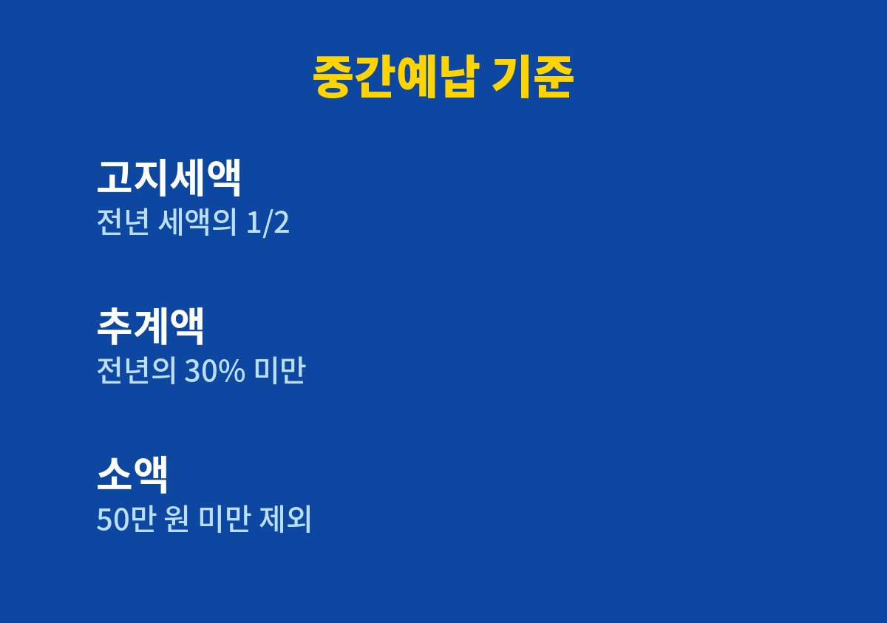
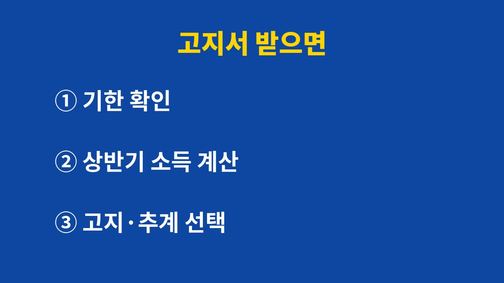

종합소득세 중간예납은 직전 과세기간에 낸 종합소득세액의 절반을 11월에 미리 내는 제도이며, 올해 상반기 장사가 줄었다면 고지서 대신 추계액으로 신고해 금액을 낮출 수 있습니다.
2026년 11월 기준으로 고지서를 받은 개인사업자가 납부 전에 비교할 순서를 정리했습니다.
종합소득세는 5월에 신고하면 끝난다고 생각하기 쉽습니다.
그런데 사업소득이 있는 개인사업자는 11월에 한 번 더 세금을 냅니다.
올해분 세금의 일부를 미리 내는 것이라 중간예납이라고 부릅니다.
고지서 금액은 직전 과세기간 종합소득세액의 2분의 1입니다.
작년에 세금을 많이 냈다면 올해 고지서도 클 수밖에 없습니다.
이 돈은 내년 5월 확정신고 때 이미 낸 세금으로 빠집니다.
새로 생기는 세금이 아니라 앞당겨 내는 돈입니다.
중간예납세액이 50만 원 미만이면 고지서가 나오지 않습니다.
신규 사업자와 사업소득이 없는 사람도 대상에서 빠집니다.
분리과세 주택임대소득만 있는 경우도 마찬가지입니다.
다만 복식부기의무자인데 전년도 세액이 없고 올해 상반기에 사업소득이 있었다면, 고지서가 없어도 추계액 신고 대상이 될 수 있습니다.
상반기 1월부터 6월까지의 사업소득으로 세금을 다시 계산한 금액이 전년도 세액의 30%보다 적으면 추계액을 신고할 수 있습니다.
표로 보면 선택지는 크게 네 갈래입니다.
| 구분 | 기준 | 처리 방법 |
|---|---|---|
| 고지세액 납부 | 직전 과세기간 종합소득세액의 1/2 | 고지서대로 납부하며 별도 신고는 없습니다 |
| 추계액 신고 | 상반기 사업소득으로 계산한 세액이 전년도 세액의 30% 미만 | 홈택스나 손택스에서 직접 신고한 뒤 납부합니다 |
| 추계액 50만 원 미만 | 신고만 하고 납부는 하지 않음 | 다음 해 5월 확정신고 때 정산합니다 |
| 분납 | 납부할 세액이 1,000만 원 초과 | 기한 뒤 2개월 이내에 나머지를 냅니다 |

예를 들어 상반기 매출이 작년의 절반에도 못 미친 쇼핑몰이라면 추계액이 고지세액보다 훨씬 작게 나옵니다.
반대로 하반기에 매출이 몰리는 업종은 상반기 기준 추계액이 실제보다 작아서, 내년 5월에 한꺼번에 더 낼 수 있으니 주의합니다.
공식 안내와 달리 체감으로는 줄어든 세금이 아니라 미뤄진 세금인 경우가 많습니다.

기한을 넘기면 납부지연가산세가 붙습니다.
미납세액의 3%에 하루 0.022%가 더해지는 방식이어서 며칠만 늦어도 금액이 눈에 띕니다.
사업이 부진하거나 재난을 겪어 납부가 어렵다면 납부기한 연장을 신청할 수 있습니다.
홈택스나 세무서에 신청서를 내면 되고, 최대 9개월까지 연장되는 것으로 안내됩니다.
연장 대상과 담보 여부는 사업자마다 달라 신청 전에 세무서에 확인합니다.
분납은 연장과 다른 제도입니다.
분납은 세액이 1,000만 원을 넘을 때 기한 안에 일부를 내고 나머지를 두 달 안에 내는 방식이고, 연장은 어려운 사정을 소명해 기한 자체를 늦추는 방식입니다.
둘 다 해당되면 어느 쪽이 이자 부담이 적은지 세무서에서 먼저 물어보는 편이 안전합니다.
오늘 할 일은 하나입니다.
홈택스나 손택스에서 고지세액을 조회하고, 올해 상반기 사업소득이 작년보다 크게 줄었는지 숫자로 확인합니다.
추계액 계산이 어렵다면 관할 세무서나 세무사에게 문의하는 편이 빠릅니다.
※ 본 글은 2026년 기준 공개 자료를 바탕으로 정리한 정보이며, 세금·금융 상품 선택은 본인 상황에 맞게 전문가와 확인하시길 바랍니다.